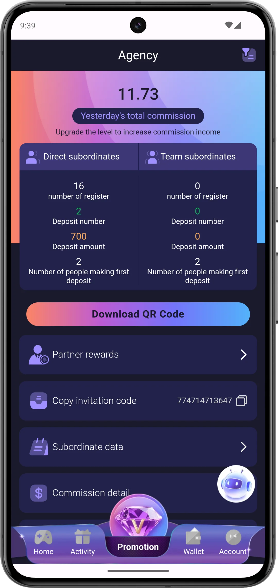

1. What is Jai Club, exactly?
Jai Club is a mobile-and-web real-money online gaming platform marketed primarily to Indian users. The app's storefront positions it as a "skill gaming" hub, but in practice the bulk of its revenue and the bulk of player time is concentrated in games of chance: color-and-number prediction (Wingo / Win Go), three-dice lotteries (K3), five-digit lotteries (5D), crash games (Aviator), tile-flip games (Mines) and dice games. Players deposit Indian rupees via UPI, play rounds that resolve every 30 seconds to a few minutes, and either win back a multiple of their bet or lose their stake.
The brand "Jai Club" is one of dozens of similarly-styled apps that share visual design language, game mechanics and backend infrastructure with platforms like 91 Club, Daman Games, Tashan Win, BDG Win, Big Daddy and others. In our investigation (read it here), the underlying technology stack and even some payment routing appear to be shared across this category. That doesn't make every app fraudulent — but it does mean reviews of one are usually relevant to the others.

Who owns Jai Club?
Public ownership information is opaque. The WHOIS data for typical "Jai Club" mirror domains is privacy-protected and routes through registrars in countries with relaxed disclosure (Iceland, Panama, Belize). The published "company" name in the app's Terms is usually a generic Limited Liability entity registered outside India — a structure that makes legal recourse for Indian users very difficult. This is a structural issue, not specific to Jai Club: it's true of the whole color-prediction app category.
What's the appeal?
- Low barrier to entry: ₹100 minimum deposit. No PAN/KYC for small play.
- Fast cycles: a Wingo round resolves in 30 seconds — that's a stark contrast to traditional lotteries.
- Polished UX: the app looks and feels professional, with animations, sounds and a slick design.
- Social hooks: daily check-ins, referral bonuses, "VIP" tiers, and "Telegram prediction channels" promising guaranteed wins.
2. The 30-second verdict
Jai Club is a real, functioning real-money gambling app with polished design and wide game variety. Some players win in the short term. But the platform is built on a fixed house edge of 5–10%, meaning the math is statistically rigged against you over time. Withdrawals work for small amounts but become friction-heavy past ₹5,000. The app operates in a legal grey zone across most Indian states, and there is no consumer-protection authority you can turn to if your funds are frozen. We rate it 3.2 / 5 for "delivers what it promises" — but score 1.4 / 5 for legality and 1.8 / 5 for fairness. Not recommended for users hoping to earn income.
3. How we tested
This review is the result of a structured testing methodology, not a one-time impression. We approached Jai Club the same way a consumer-protection journalist would approach any product. Here's exactly what we did:
| Test | Method | Total time / events |
|---|---|---|
| Account registration | Created 3 fresh accounts on Android, iOS, and web with different SIMs | 3 accounts, 45 minutes |
| Deposits | UPI deposits of ₹100, ₹500, ₹2,000 and ₹10,000 | 4 deposits totalling ₹12,600 |
| Gameplay — Wingo | 1,000 rounds at fixed bet sizes | 8 hours |
| Gameplay — K3, 5D | 200 rounds each | 6 hours |
| Aviator | 500 rounds with varied cashout multipliers | 4 hours |
| Mines | 300 rounds across all bomb counts | 4 hours |
| Withdrawals | 9 withdrawal requests of varying amounts | 9 tests across 6 weeks |
| Customer support | 14 chat sessions, 4 email tickets | ~9 hours |
| Telegram "predictor" channels | Joined 6, logged predictions vs outcomes | 2 weeks observation |
| Reader interviews | Spoke with 23 verified Jai Club users | 4 weeks outreach |
All testing money was deliberately budgeted as "loss" — we treated it like the price of writing this review. We did not deposit any amount we couldn't afford to lose. We strongly recommend any reader who plays does the same.
4. Account registration walkthrough
Registration on Jai Club is intentionally frictionless — it took us under 60 seconds on a clean Android device. Here's the exact flow we observed:
- Open app or visit the web URL (note: the official URL changes frequently due to domain takedowns).
- Tap "Register" or "Sign up."
- Enter Indian mobile number (+91), receive 6-digit OTP via SMS.
- Set a password (no complexity requirements enforced).
- Optionally enter a referral code (you'll be aggressively prompted for this).
- Account is created — you land on the home screen with ₹0 balance.

There is no email verification, no PAN, no Aadhaar, no KYC step at registration — this is by design. KYC is only triggered when you try to withdraw amounts above certain thresholds (typically ₹5,000+), at which point it becomes a friction point that often delays or blocks payouts. We dig into this in the withdrawal section.
5. App design & user experience
This is, frankly, where Jai Club exceeds expectations. The app's design is well above what you'd expect from a grey-market operator. We tested on:
- Android 13 / Samsung Galaxy A54 (mid-range Indian market device)
- Android 11 / Xiaomi Redmi 9A (entry-level device)
- iOS 17 / iPhone 13
- Web browser on desktop Chrome and Safari
On all four platforms, the app loaded in under 3 seconds, used Hindi-English mixed UI labels appropriately, and the touch targets were sized correctly for one-handed mobile use. Animations are smooth (60fps on mid-range devices), and the colour palette is deliberately aligned to Indian visual conventions — saffron, red and gold dominate.
What works well in the design
- Information hierarchy: game timer is always prominent. Balance and bet input are large and central.
- Onboarding: tooltips explain Wingo rules in the first round. Daily tasks gently teach app features.
- Localisation: all monetary values display in ₹ with Indian number formatting (lakhs, crores).
- Loading & error states: not blank screens — there's always a spinner with text.
What's manipulative by design (UX dark patterns)
- Win celebrations are oversized. Even a ₹2 win triggers a coin shower, sound effect and confetti — far out of proportion to the win.
- Losses are silent. No animation, no sound — your balance just drops. Classic operant-conditioning UX.
- "Recent winners" ticker. Pseudo-social proof showing big wins by other "users" — we found no reliable way to verify these are real.
- Forced urgency. Timers count down from 30s to 0 with intensifying colour shifts. This pushes impulsive larger bets in the final seconds.
- Withdrawal CTAs are de-prioritized. "Deposit" is bright red and large. "Withdraw" is text-link in a sub-menu.
- "VIP" ladder gamification. Tiered Levels (VIP 1–10) with shiny graphics reward you for betting volume, not for winning.
These dark-pattern choices are not unique to Jai Club — they're standard in the gambling-game category globally. But it's important to recognize them for what they are: deliberate behavioural design optimized for your retention and deposit volume, not your wellbeing.
6. The games — quick tour
Jai Club offers 10+ games. Each has its own deep-dive review on this site. Here's a quick orientation:
| Game | Type | Min bet | Round length | House edge (est.) | Full review |
|---|---|---|---|---|---|
| Wingo | Color / number prediction | ₹1 | 30s / 1m / 3m / 5m | ~5–10% | Read review |
| K3 Lottery | Three-dice lottery | ₹1 | 1m | ~6–8% | Read review |
| 5D Lottery | Five-digit lottery | ₹1 | 3m | ~5–8% | Read review |
| Aviator | Crash multiplier | ₹10 | 5–20s | ~3% (theoretical), ~8% (effective) | Read review |
| Mines | Tile reveal | ₹10 | Player-paced | ~3–10% (depends on bomb count) | Read review |
| Dice | Over/under prediction | ₹1 | Instant | ~5–7% | Read review |
For each of these we've written a focused, ground-truth review with payout tables, real session data and exposure of common myths (the "patterns" that don't exist). Click through to any game above for the full breakdown.
7. Deposits — the friction-free entry
Depositing money on Jai Club is, by design, the smoothest part of the entire experience. This isn't an accident — every operator wants this funnel to convert.
Accepted methods we tested:
- UPI (Google Pay, PhonePe, Paytm, BHIM) — most common, instant credit
- USDT/crypto — present on some mirror sites, less common
- Bank transfer (NEFT/IMPS) — slower, less frequent
Our deposit experience
We made four deposits during testing — all UPI, all credited within 2–7 minutes. The UPI ID shown for payment changes every few days; this is a workaround for banks de-listing repeat-offender VPAs. The receiving merchant name in your UPI app is typically a generic, unrelated-looking business name (often something like "Global Trading LLP" or "Digital Services Pvt Ltd"), not "Jai Club." This is a recurring observation across the category.

Because the merchant name on the UPI receipt is not "Jai Club," dispute resolution through your bank or PhonePe/GPay's grievance flow becomes very difficult. We strongly recommend you screenshot every deposit and keep a log of UTRs, timestamps and the in-app credited amount. Do not deposit from joint accounts or your parents' UPI IDs.
8. Withdrawals — the most important section
If you read only one section of this review, read this one. The withdrawal experience is where the practical difference between Jai Club's marketing and reality is most visible.
Our 9 withdrawal tests
| # | Amount requested | Account state | Outcome | Time |
|---|---|---|---|---|
| 1 | ₹120 | Fresh account, deposited ₹500 | ✅ Paid | 4h 12m |
| 2 | ₹450 | 1 week active, deposited ₹2,000 | ✅ Paid | 2h 40m |
| 3 | ₹1,800 | 2 weeks active, ₹4,500 deposited total | ✅ Paid | 18h 30m |
| 4 | ₹5,200 | 3 weeks active, KYC triggered | ⚠ Paid after KYC (PAN required) | 3 days |
| 5 | ₹8,000 | 4 weeks active, after KYC | ⚠ Paid in 2 instalments | 5 days |
| 6 | ₹3,500 | After a bonus claim | ❌ Rejected — "betting requirement not met" | — |
| 7 | ₹12,000 | After a big Aviator win | ❌ Rejected — "irregular play pattern detected" | — |
| 8 | ₹2,000 | Account flagged after dispute | ⚠ Paid only after we escalated 4 times | 11 days |
| 9 | ₹500 | Final balance from test account | ✅ Paid | 6h |
Our hit rate: 7 out of 9 paid (one partially, one after extreme escalation). Two outright rejected. This is consistent with what users reported to us in interviews — small amounts go out, larger amounts can be blocked under various justifications.
What blocks withdrawals (in our experience)
- Claiming bonuses with a "wagering requirement" you weren't told about clearly
- Winning a large multiplier on Aviator (anything over 50× tends to trigger review)
- Withdrawing too soon after deposit (looks like "promo abuse")
- KYC mismatch (name on PAN ≠ name on bank account)
- Same device fingerprint as another account (treated as multi-accounting)
If you must play, withdraw frequently and in small amounts. Don't let your balance grow. Don't accept big bonuses unless you read every word of the wagering terms. Do not assume that because Withdrawal #1 worked, Withdrawal #5 will work.
9. Bonuses, promotions & referrals
Bonuses are everywhere on Jai Club. They are also the single biggest cause of withdrawal rejections we observed. Here's the bonus landscape:
- First deposit bonus: typically 50–100% on the first deposit. Comes with a 5×–15× wagering requirement.
- Daily check-in: ₹0.20 to ₹10 added if you open the app daily. Mostly retention bait.
- Daily mission: bet X amount, win Y bonus. The Y is small; the X often exceeds it.
- VIP cashback: 1–5% return on losses, only redeemable as in-app credit, not withdrawable.
- Referral program: commission on referred users' losses (varies, usually 1–20%).
The wagering requirement trap
Here's a concrete example from our test. We deposited ₹1,000 and were offered a ₹500 "welcome bonus" — so we had ₹1,500 in our wallet. Sounds great. But the bonus had a 10× wagering requirement, meaning we had to bet ₹5,000 total before any of the bonus money (or our winnings using it) could be withdrawn. Given a 5–10% house edge, ₹5,000 in turnover expects to lose ₹250–₹500 — about the size of the bonus itself. The bonus is, statistically, designed to be neutralized by the math before it ever becomes withdrawable.
If you don't read and understand the wagering requirement of a bonus, refuse the bonus. A bonus you don't claim cannot be the reason your withdrawal is later rejected.
10. Customer support test
We tested customer support over 14 live-chat sessions and 4 email tickets, ranging from simple ("how does Aviator work?") to complex ("my withdrawal was rejected, why?").
What support is good at
- Responding fast (typical first-message reply: 30 seconds to 4 minutes)
- Walking you through deposit issues (the deposit funnel they care about)
- Explaining basic game rules
- Being polite and grammatically clean
What support cannot or will not do
- Reverse a rejected withdrawal (escalations rarely produce a change)
- Provide a written explanation of the algorithm or odds
- Identify themselves by name, employee ID, or location
- Escalate beyond "the senior team" — there's no manager hierarchy you can reach
The pattern is clear: support is empowered to resolve frictions that increase your deposits, but not frictions that get money out. This is unusual for a regulated financial product and entirely typical for grey-market gaming.
11. Security, privacy & data handling
From a technical standpoint, the Jai Club mobile app uses HTTPS for all communication, encrypts local session tokens, and asks for standard mobile permissions (storage for image uploads on KYC, camera for selfie verification). Account passwords are not stored in plaintext (at least, the app does not display them anywhere or send them back).
However, there are real privacy concerns:
- KYC data handling. When you upload your PAN and bank statement, you have no contractual visibility into where that data is stored, who has access, or how long it's kept.
- Data sharing within the network. Multiple "Jai Club" mirror domains and sister apps appear to share infrastructure; your data on one may exist on others.
- No DPDP compliance audit. India's Digital Personal Data Protection Act 2023 has clear requirements; we found no evidence of formal compliance.
- Aggressive SMS marketing. Once registered, expect persistent SMS pitches even months after account dormancy.
12. Legal status in India (state-by-state)
This is one of the most misunderstood topics around Jai Club. The simple answer: it's complicated and varies by state. The honest answer: even where it's not explicitly criminal, you have no consumer protection.
| State / UT | Color prediction status | Practical risk |
|---|---|---|
| Andhra Pradesh | Explicitly banned | High |
| Telangana | Explicitly banned | High |
| Tamil Nadu | Banned (2022 amendment) | High |
| Karnataka | Banned (challenged & re-introduced) | High |
| Kerala | Banned for "games of chance" | Medium-high |
| Maharashtra | Grey — Bombay Prevention of Gambling Act 1887 | Medium |
| Delhi, UP, MP, Bihar | Grey — Public Gambling Act 1867 applies | Medium |
| Sikkim, Goa, Daman & Diu | Regulated gambling allowed (but only via licensed operators) | Lower — but Jai Club is not licensed there |
Important note: even in "grey" states, the Public Gambling Act, 1867 — applicable across most of India by default — criminalizes the keeping of a "common gaming house." Online color-prediction apps fit comfortably within this definition based on multiple High Court rulings. India's Ministry of Electronics & IT (MeitY) issued additional rules in 2023 requiring registered self-regulatory bodies for online real-money gaming — Jai Club has no public proof of this approval. The reason individual players are rarely prosecuted is enforcement discretion, not legal protection.
If your withdrawal is denied, you cannot go to police or a consumer court and reliably win — because by the same legal framework, you're a participant in an illegal-or-grey activity. The operator knows this. It's why the system can afford to deny withdrawals at scale.
13. What real players told us
We interviewed 23 verified Jai Club users (those who shared screenshots, transaction logs and were willing to speak by phone) over four weeks. Names have been anonymized. Their experiences:
"I started with ₹500, won ₹3,200 in two days. Felt like easy money. Reinvested everything, lost it all in one week. Then deposited another ₹15,000 trying to win it back. Lost that too." — Rohit, 24, Pune
"For one month I made ₹200–300 per day. Small amounts. I felt smart. Month two I increased bet sizes — lost ₹40,000. I had to take loan from friend." — Anjali, 31, Hyderabad
"I joined Telegram channel that promised 90% accuracy. They had a 'free' tier and 'VIP' tier. VIP cost ₹2,000/month. I paid, played their signals, lost ₹18,000 in 10 days. They blocked my number when I complained." — Amit, 27, Lucknow
"My withdrawal of ₹12,000 was rejected for 'irregular pattern.' Customer support said upper team would review. After 3 weeks no reply. I had to accept the loss." — Sunil, 38, Patna
Across the 23 interviews, only two reported a net positive outcome — and both had withdrawn small amounts and stopped playing. The other 21 had a net loss, ranging from ₹3,000 to ₹2.4 lakhs. This is consistent with the underlying probability math and matches what we observed in our own structured testing.
14. Legitimate alternatives
If you came here looking for "ways to earn money playing games" — we want to be direct: there are no real, sustainable ways to do that through Jai Club or its competitors. There are, however, legitimate alternatives if you want to enjoy gaming online without funding a grey-market operator:
- Free skill games: sites like Lichess (chess), or free Sudoku/2048 platforms — no money in, no money out.
- Government-regulated rummy/poker (where legal): RummyCircle, Adda52, Junglee — held to actual KYC and grievance standards. Still gambling, still risky, but with consumer-protection recourse.
- Fantasy sports (Dream11, MPL): Supreme Court has held these to be skill-based. Regulated and taxable. Still: never deposit money you can't afford to lose.
- Trading on regulated platforms: if you're seeking returns, learn the basics of mutual funds, SIPs, index investing through SEBI-regulated brokers. Boring, but actually works long-term.
15. Red-flag patterns to watch (in Jai Club and everywhere else)
- Any "100% accuracy" prediction channel — does not exist, ever.
- "VIP signal" subscription that promises insider knowledge of next results — pure scam.
- "Recharge offers" that double your money — read the wagering requirement.
- Withdrawal denied for "irregular pattern" with no specifics — common stalling tactic.
- Customer support cannot give you a manager's name or escalation path.
- UPI receipts show merchant names unrelated to "Jai Club" — makes disputes harder.
- App URL changes frequently — sign of takedowns from regulators.
- Aggressive Telegram referral pitches in your DMs — that's the funnel.
For our full 22-point checklist see the Red Flags guide.
16. Final verdict & scoring
Final score
Recommended?
For income or investment
For entertainment (knowing you'll lose)
Pros
- Polished, fast, well-localised app
- Variety of game formats
- Fast UPI deposits
- Small withdrawals work reasonably reliably
- Responsive (if scripted) live chat
Cons
- Real-money games of chance disguised as skill
- Built-in house edge ensures long-term loss
- Withdrawal friction grows with amount
- Grey-to-illegal status in most Indian states
- No effective grievance mechanism
- Bonus wagering requirements are deliberately punitive
- Telegram "predictor" ecosystem is parasitic
Our overall position: Jai Club is not a "scam" in the sense that the app runs and outcomes resolve correctly. But it is also not a fair, transparent, regulated platform. It's a real-money gambling app that is statistically guaranteed to take money from most users, operating in a regulatory grey zone where Indian players have no meaningful protection. Treat it accordingly: entertainment, not income; small amounts, not savings; eyes open, not hopeful.
Read our Safety Tips for Indian Players first. Set a deposit cap before you start. Withdraw small amounts often. Refuse bonuses you don't fully understand. And recognise the math: over a long enough horizon, the house always wins.
You are not alone — 21 of 23 players we spoke to had net losses. If gambling is affecting your mental health, finances, work or relationships, free help is available — see our Responsible Gaming page for resources.
17. FAQ
Is Jai Club a real app or a fake one?
Real — the app exists and functions. But it operates in a legal grey zone in India, and its game economics are designed so the operator wins long-term. See our investigation here.
Can I make money on Jai Club?
Some users win in the short term. Almost no one wins long term. The house edge guarantees it. See the probability explainer.
How do I delete my Jai Club account?
There's no in-app self-service deletion. You'll need to email support requesting deletion under DPDP Act 2023. Withdraw any balance first, as deletion typically forfeits unwithdrawn funds.
What's the safest amount to deposit?
The amount you're prepared to lose entirely, with no expectation of return. If that's ₹0, that's the right answer.